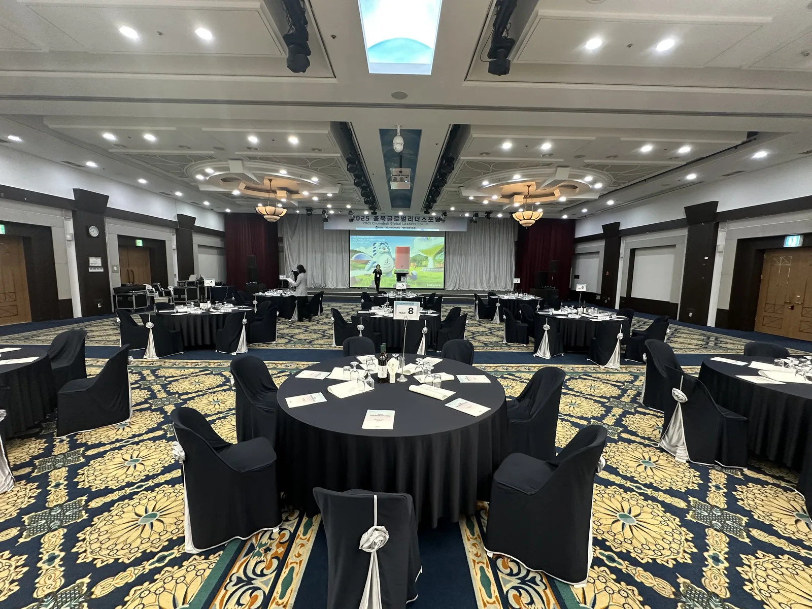
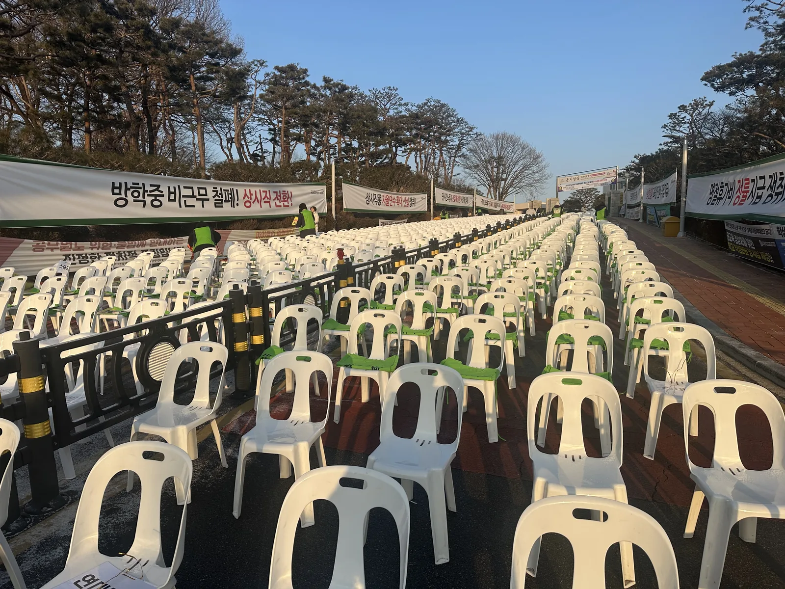

기념식 · 시상식은 "격식"이 보여야 하는 행사입니다. 같은 의자라도 커버를 씌우면 다르고, 같은 테이블이라도 라운드로 놓으면 다릅니다. 대전 · 세종 · 청주 기관 · 기업 행사에서 저희가 잡는 좌석 구성과 수량 기준을 적습니다.

라운드테이블: 8인 기준, 무대와 3m
연회장 라운드테이블(1500~1800mm)은 8명이 기본, 10명이면 좁습니다. 무대 앞 첫 줄은 무대에서 3m 띄워 내빈이 사진 찍을 공간을 만들고, 테이블 사이는 1.5m를 확보해 서빙 동선을 냅니다.
- 참석 160명 → 라운드 20개 · 의자 160개 + 여유 10개
- 테이블보 + 의자 커버 + 센터피스로 통일
- 내빈 테이블은 무대 정면 2~3개, 명패 준비

야외 기념식 관람석: 줄과 통로가 전부입니다
야외에서 의자 300~500개를 놓을 때는 중앙 통로 2m + 좌우 통로 1.5m를 먼저 잡고 12~16개씩 줄을 만듭니다. 줄 간격은 90cm. 앞 3줄은 내빈석으로 커버를 씌우고 뒤는 흰 의자 그대로 두면 예산이 줄어듭니다.
무대 · 연단 · 배너
기념식 무대는 덱 높이 40~60cm, 연단(포디움) 1개, 국기 · 기관기 자리, 뒷막 배너가 기본입니다. 음향은 무선 마이크 2개(사회 · 축사)와 유선 1개(연단)로 구성하고, 시상식은 수상자 대기 동선을 무대 옆에 따로 만듭니다.
겨울 · 이른 봄 야외 행사
1~3월 야외 기념식은 의자에 서리가 내립니다. 행사 1시간 전 의자를 닦고, 내빈석에는 방석 · 무릎담요를 준비하면 좋습니다. 저희는 새벽 설치 뒤 행사 직전에 한 번 더 점검하고 나옵니다.
자주 묻는 질문
Q대전 호텔 · 컨벤션 연회장도 세팅하나요?
네. 대전 · 세종 · 청주 호텔 연회장, 기관 강당, 야외 광장 모두 갑니다. 연회장 자체 테이블이 있으면 커버 · 테이블보만도 가능합니다.
Q의자 커버 색은 무엇이 있나요?
블랙 · 화이트를 기본으로 하고, 리본 색으로 포인트를 줄 수 있습니다.
Q당일 참석 인원이 늘면요?
여유 수량을 10% 가져가고, 그 이상 늘어날 것 같으면 전날까지 알려 주시면 추가합니다.